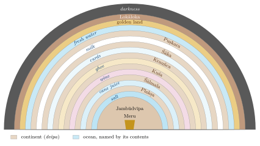
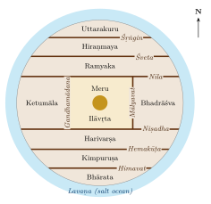
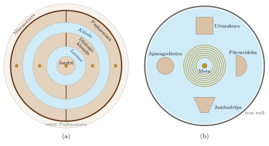

Chapter 2: Purāṇic, Jain and Buddhist Cosmography¶
uttaraṃ yat samudrasya himādreś caiva dakṣiṇam
varṣaṃ tad bhārataṃ nāma bhāratī yatra santatiḥ
“The land that lies north of the ocean and south of the snowy mountains is called Bhārata; there dwell the descendants of Bharata.”
— Viṣṇu Purāṇa 2.3.1
Many Hindu rituals still begin with a declaration of intent (saṅkalpa) that locates the worshipper in cosmic time and space. The priest names the current aeon, age and year and then the place: “in Jambūdvīpa, in Bhāratavarṣa, in Bharatakhaṇḍa…”, narrowing down to the local region and river. The formula is a small survival, in everyday religious practice, of the cosmography laid out in the Purāṇas: a universe of concentric ring-shaped continents and oceans round a golden central mountain, Meru, with the land of Bhārata as the southern part of the innermost continent.
This chapter describes that cosmography and the parallel Jain and Buddhist systems. They are best understood as cosmologies: pictures of the whole universe, ordered by number, symmetry and religious value, in which the known land of India was given its place. They were not attempts at a map of the physical earth that “failed”, nor coded descriptions of the modern continents. Within them, however, the description of Bhāratavarṣa itself—its mountains, rivers and peoples—does draw on real geographical knowledge, and the boundary between the two is one of the interesting features of the texts (Kirfel 1920; Sircar 1971; Eck 2012).
2.1 The Purāṇic Universe in Outline¶
The Purāṇic bhuvanakośa sections describe, with variations, a flat, circular earth-disc (bhūmaṇḍala) at the centre of which stands Meru. Round Meru lies the continent Jambūdvīpa, and round that, in alternation, six further ring-shaped continents and seven oceans. Beyond the last ocean lies a land of gold, then the mountain Lokāloka (“world and no-world”), which separates the lit world from outer darkness. Above the earth rise the heavenly worlds; below it lie the netherworlds and, below them, the hells.
Viṣṇu Purāṇa 2.2.5–6: The Seven Continents and Seven Oceans
jambūplakṣāhvayau dvīpau śālmaliś cāparo dvija
kuśaḥ krauñcas tathā śākaḥ puṣkaraś caiva saptamaḥ
ete dvīpāḥ samudrais tu sapta saptabhir āvṛtāḥ
lavaṇekṣusurāsarpirdadhidugdhajalaiḥ samam
“The continents called Jambū and Plakṣa, another, Śālmali, O Brahmin; Kuśa, Krauñca, likewise Śāka, and Puṣkara as the seventh: these seven continents are surrounded by seven oceans, of salt water, sugar-cane juice, wine, ghee, curds, milk and fresh water.”
| Continent (dvīpa) | Named after | Surrounding ocean | |
|---|---|---|---|
| 1 | Jambūdvīpa | jambū (rose-apple, Syzygium cumini) | salt water (lavaṇa) |
| 2 | Plakṣadvīpa | plakṣa (a fig tree) | sugar-cane juice (ikṣu) |
| 3 | Śālmaladvīpa | śālmali (silk-cotton tree) | wine (surā) |
| 4 | Kuśadvīpa | kuśa grass | clarified butter (sarpis) |
| 5 | Krauñcadvīpa | Mount Krauñca | curds (dadhi) |
| 6 | Śākadvīpa | śāka (teak) | milk (dugdha, kṣīra) |
| 7 | Puṣkaradvīpa | puṣkara (lotus) | fresh water (jala) |
Table 2.1 lists the continents and oceans, and Figure 2.1 shows their arrangement. In the Viṣṇu Purāṇa’s account Jambūdvīpa is 100,000 yojanas across, each following continent is twice as wide as the one before, and each ocean is as wide as the continent it encloses. The numbers grow very large very quickly; they express immensity and order, not measurement. The order of the oceans was variously explained by commentators; the familiar ocean of salt water is the one nearest to human beings, and the Ocean of Milk, on which Viṣṇu reclines and which gods and demons churned for the nectar of immortality, lies far out in the system. H. H. Wilson’s annotated translation of the Viṣṇu Purāṇa, though old, remains the most accessible English version of these chapters (Wilson 1864–1870).

Reading the Seven Continents
-
The scheme is symmetrical and numerical: seven continents, seven oceans, regular doubling.
-
It places the known land (Bhāratavarṣa) in the innermost continent and surrounds it with ever larger, more wonderful and less accessible regions.
-
Identifications of the outer continents with Asia, Africa, Europe or the Americas, which appear in some modern popular writing, have no support in the texts.
-
Some names of the outer continents (Śākadvīpa, Kuśadvīpa) were linked by later writers with real lands to the west, but these are interpretations, not the meaning of the cosmography.
2.2 Jambūdvīpa and Mount Meru¶
2.2.1 Meru¶
At the centre of Jambūdvīpa stands Meru, a mountain of gold. In the Viṣṇu Purāṇa it rises 84,000 yojanas above the earth and descends 16,000 below; it is wider at the top than at the base, so that it is often compared to the seed-cup of a lotus whose petals are the continents. On its summit lie the cities of Brahmā and of the guardians of the directions; round it the sun, moon and stars revolve. Four buttress mountains support it on the four sides—in the Viṣṇu Purāṇa Mandara (east), Gandhamādana (south), Vipula (west) and Supārśva (north)—each crowned with a great tree, and four lakes lie between them (Kirfel 1920). The same Purāṇa uses the name Gandhamādana a second time, for the range that bounds the central region of Jambūdvīpa on the west (below); the two uses are both in the text and should not be confused.
The Gaṅgā, falling from heaven onto the summit of Meru, divides into four streams that flow to the four quarters: the Sītā to the east, the Alakanandā to the south, the Cakṣu to the west and the Bhadrā to the north. The Alakanandā flows into Bhāratavarṣa and becomes the earthly Gaṅgā. The name of the southern stream is also the name of one of the real headwaters of the Ganges in the Garhwal Himalaya, an example of the way the cosmography attaches itself to known places.
Meru is an axis mundi, a world-mountain at the centre of the cosmos, comparable in function to other world-centres in the religions of Asia. Some modern writers, following B. G. Tilak’s The Arctic Home in the Vedas (1903), have read the descriptions of Meru as a memory of the Arctic, where the sun circles the horizon. The idea rests on selected passages and has not been accepted by scholars of the Purāṇas. The astronomers, however, did locate Meru at the north pole of their spherical earth, where the gods see the sun for six months at a time (see below and Chapter 3).
2.2.2 The Nine Regions and the Mountain Ranges¶
Jambūdvīpa is divided into nine regions (varṣa) by mountain ranges that run east to west. South of Meru, separated by three ranges—Himavat (the Himālaya), Hemakūṭa and Niṣadha—lie Bhāratavarṣa, Kimpuruṣavarṣa and Harivarṣa. North of Meru, separated by the ranges Nīla, Śveta and Śṛṅgin, lie Ramyaka, Hiraṇmaya and Uttarakuru. These six ranges are the varṣaparvatas. In the centre, round Meru, lies Ilāvṛta, with Bhadrāśva to its east and Ketumāla to its west, bounded in many accounts by the ranges Mālyavat and Gandhamādana (Table 2.2 and Figure 2.2).
| Varṣa | Position | Separated by |
|---|---|---|
| Bhārata | southernmost | Himavat |
| Kimpuruṣa | south | Himavat and Hemakūṭa |
| Harivarṣa | south, next to Ilāvṛta | Hemakūṭa and Niṣadha |
| Ilāvṛta | centre, round Meru | Niṣadha and Nīla |
| Ramyaka | north, next to Ilāvṛta | Nīla and Śveta |
| Hiraṇmaya | north | Śveta and Śṛṅgin |
| Uttarakuru | northernmost | Śṛṅgin |
| Bhadrāśva | east of Ilāvṛta | Mālyavat |
| Ketumāla | west of Ilāvṛta | Gandhamādana |

The Himavat is plainly the Himālaya, and Uttarakuru, the land of the northern Kurus, keeps a name that appears already in Vedic literature. Beyond these, attempts to identify the ranges with the Karakoram, the Kunlun or the Tian Shan are guesses. It is more economical to see the system as a symmetrical construction that begins from the known northern mountains and extends the pattern outward.
2.3 Bhāratavarṣa: The Known Land¶
The Purāṇas give Bhāratavarṣa special status. It is the only karmabhūmi, “land of action”, where deeds bear fruit and liberation can be sought; the other regions are bhogabhūmis, “lands of enjoyment”, where beings consume the results of earlier merit. The Viṣṇu Purāṇa says that the gods themselves envy those born in Bhārata. The same section is the most concretely geographical part of the cosmography.
2.3.1 The Nine Divisions¶
The Viṣṇu Purāṇa (2.3) divides Bhāratavarṣa into nine parts: Indradvīpa, Kaśerumat, Tāmraparṇa, Gabhastimat, Nāgadvīpa, Saumya, Gandharva and Vāruṇa, and a ninth, “this one, surrounded by the sea”. Other Purāṇas give similar lists. The ninth part is usually taken to be the subcontinent proper (called Kumārikā or Kumārīdvīpa in some texts); the others may reflect vague knowledge of islands and lands beyond it—Tāmraparṇa is an old name for Sri Lanka—but most of them cannot be identified (Sircar 1971).
2.3.2 The Seven Principal Mountain Ranges¶
The Purāṇas list seven principal ranges (kulaparvata) of Bhāratavarṣa, distinct from the Himālaya, which forms its northern boundary. Their usual identifications are given in Table 2.3.
Viṣṇu Purāṇa 2.3.3
mahendro malayaḥ sahyaḥ śuktimān ṛkṣaparvataḥ
vindhyaś ca pārīyātraś ca saptātra kulaparvatāḥ
“Mahendra, Malaya, Sahya, Śuktimat, the Ṛkṣa mountain, Vindhya and Pāriyātra: these are the seven principal mountain ranges here [in Bhārata].”
| Kulaparvata | Usual identification (with degree of certainty) |
|---|---|
| Mahendra | hills of the Eastern Ghats in southern Odisha (the name survives in Mahendragiri); fairly secure |
| Malaya | southern Western Ghats in Kerala and Tamil Nadu, the sandalwood hills; secure |
| Sahya | northern and central Western Ghats (the Sahyādri); secure |
| Śuktimat | uncertain; placed by different scholars in central India, Chhattisgarh or Bihar |
| Ṛkṣa | uncertain; often taken as the eastern Vindhya or the Satpura hills |
| Vindhya | the Vindhya hills of central India; secure in general, though the ancient name covered more than the modern range |
| Pāriyātra | western Vindhya and Aravalli hills; probable |
The Purāṇas also list the rivers that rise in each range, and these lists contain many real river names: the Godāvarī, Bhīmarathī and Kṛṣṇaveṇī from the Sahya, the Tāmraparṇī from the Malaya, the Narmadā and others from the Ṛkṣa or Vindhya. They are the most reliable part of the Purāṇic description and were used by D. C. Sircar and others to reconstruct the historical geography of early India (Sircar 1971; Law 1954). The lists of peoples (janapada) that follow are more mixed: they combine names of contemporary peoples with older names preserved from earlier lists, and arrange them by direction.
Geographic Insight: Empirical Knowledge Inside a Cosmological Frame
The description of Bhāratavarṣa shows real knowledge of the mountains and rivers of the subcontinent. That knowledge is placed inside a cosmological frame whose outer parts are imaginary. Reading the whole cosmography as a map, or dismissing the whole as fantasy, both miss this layered character. Even within Bhāratavarṣa, identifications should be given with their degree of certainty.
2.4 Myths of Origin and Lists of Peoples¶
The Purāṇas explain the shape of the world through stories as well as numbers. In the Bhāgavata Purāṇa (Book 5), King Priyavrata, dissatisfied that the sun lit only half the earth at a time, drove his shining chariot round the earth seven times behind the sun; the ruts left by its wheels became the seven oceans, and the land between them the seven continents, which he divided among his sons. In other Purāṇas, Priyavrata’s sons are given the seven continents to rule, and his grandson Nābhi and great-grandson Ṛṣabha (also honoured by Jains as the first tīrthaṅkara) rule Jambūdvīpa; Ṛṣabha’s son Bharata gives his name to Bhāratavarṣa. Such stories connect cosmic geography with royal genealogy. F. E. Pargiter tried to extract a political history of early India from the Purāṇic genealogies (Pargiter 1922); his chronology is no longer accepted, but his collation of the lists is still consulted.
The description of Bhāratavarṣa in the Mārkaṇḍeya, Vāyu, Matsya and other Purāṇas includes long lists of peoples (janapada) arranged by region: those of the Middle Country, the north and north-west, the east, the south, the west, the Vindhya and the mountains. Some lists also describe the land as a tortoise lying on the waters, with peoples assigned to its head, flanks, feet and tail, a scheme related to Varāhamihira’s Kūrmavibhāga (Section 3.4). Many of the names are those of real peoples—Kurus, Pañcālas, Kosalas, Magadhas, Aṅgas, Vaṅgas, Kaliṅgas, Andhras, Coḻas, Pāṇḍyas, Keralas, Gāndhāras, Kāmbojas—but the lists accumulated over centuries and include names that had ceased to be current when the texts reached their present form. Historians therefore use them with care, alongside inscriptions and other dated evidence (Sircar 1971; Law 1954).
2.5 The Vertical Cosmos: Worlds Above and Below¶
The Purāṇic universe is also vertical. Above the earth are the worlds called by the names of the vyāhṛtis, the sacred utterances recited with the Gāyatrī: bhūḥ (earth), bhuvaḥ (the intermediate space) and svaḥ (heaven). The Taittirīya Upaniṣad (1.5.1) already speaks of these three utterances and adds a fourth, mahaḥ. The Purāṇas extend the series to seven upper worlds: Bhūr, Bhuvar, Svar, Mahar, Jana, Tapas and Satya (the world of Brahmā). Table 2.4 sets the upper and lower worlds side by side.
Below the earth lie seven netherworlds (pātālas). Their names differ between the Purāṇas; the Bhāgavata Purāṇa (5.24) lists Atala, Vitala, Sutala, Talātala, Mahātala, Rasātala and Pātāla. They are inhabited by serpents (nāgas), daityas and dānavas, and are described as places of great beauty and luxury, lit by the jewels in the serpents’ hoods; the Viṣṇu Purāṇa has the sage Nārada report that they are more delightful than heaven. The hells (naraka), places of punishment, lie further below.
| Upper worlds (loka) | Lower worlds (Bhāgavata Purāṇa 5.24) |
|---|---|
| Satya (Brahmaloka) | Atala |
| Tapas | Vitala |
| Jana | Sutala (ruled by Bali) |
| Mahar | Talātala |
| Svar (heaven of Indra) | Mahātala |
| Bhuvar (intermediate space) | Rasātala |
| Bhūr (earth) | Pātāla (the serpent world) |
2.6 Jain Cosmography¶
Jain cosmography is related to the Purāṇic system but is a separate and highly systematic tradition, set out in canonical and post-canonical works such as the Śvetāmbara Jambūdvīpaprajñapti, Umāsvāti’s Tattvārthasūtra (chapter 3) and the Digambara Tiloyapaṇṇatti attributed to Yativṛṣabha (Caillat and Kumar 1981; Dundas 2002).
2.6.1 The Shape of the Universe¶
The occupied universe (loka) has the shape of a standing person with arms akimbo, the lokapuruṣa: broad at the base, narrow at the waist and broad again at the chest. The lower world contains the hells; the upper world, the heavens, with the abode of liberated souls (siddhaśilā) at the top. The middle world (madhyaloka), a thin disc at the waist, is the world of humans and animals.
2.6.2 Innumerable Continents and Oceans¶
The middle world consists not of seven but of innumerable (asaṃkhyāta) concentric continents and oceans. Jambūdvīpa, 100,000 yojanas across, is at the centre; it is surrounded by the Lavaṇa (salt) ocean, then by the continent Dhātakīkhaṇḍa, the Kāloda ocean and the continent Puṣkaravara, and so on, each twice as wide as the last. Human beings can live only in Jambūdvīpa, Dhātakīkhaṇḍa and the inner half of Puṣkaravara, which is divided by the circular mountain Mānuṣottara: the “two and a half continents” (aḍhāī dvīpa, Sanskrit ardhatṛtīya dvīpa), the world of humans (Figure 2.3a).
Within this region there are five Merus: one in Jambūdvīpa, two in Dhātakīkhaṇḍa and two in the habitable half of Puṣkaravara. Jambūdvīpa itself is divided into seven regions (kṣetra) by six east–west ranges: Bharata in the south, then Haimavata, Hari, Videha (round Meru), Ramyaka, Hairaṇyavata and Airāvata in the north. The arrangement, as Jain painters showed it, is drawn in Figure 5.1.
Hindu and Jain Cosmography Compared
-
Number of continents: seven in the Purāṇas; innumerable in Jain texts, with human life confined to two and a half of them.
-
Meru: one in the Purāṇas; five in the Jain world of humans.
-
Regions of Jambūdvīpa: nine varṣas in the Purāṇas; seven kṣetras in Jain texts.
-
Lands of action: in Jain cosmography Bharata, Airāvata and the parts of Videha outside the two Kuru lands are karmabhūmis, where Jinas are born and liberation is possible; the rest are bhogabhūmis. There are fifteen karmabhūmis in the two and a half continents.
-
Time: in Bharata and Airāvata time moves in great cycles of ascent and descent (utsarpiṇī and avasarpiṇī); in Videha it does not, so that a Jina is always teaching there.
Jain cosmography gave rise to some of the most elaborate diagrams in Indian art: painted cloths of the two and a half continents (aḍhāī dvīpa paṭa), of Jambūdvīpa and of the lokapuruṣa, mostly from western India and from the fifteenth century onward (Chapter 5).
2.6.3 Nandīśvaradvīpa¶
Jain cosmography gives special importance to the eighth continent, Nandīśvaradvīpa, beyond the world of humans. On it stand fifty-two eternal temples of the Jinas, thirteen in each direction, where the gods gather to worship on festival days. Since humans cannot travel there, Jains have recreated it on earth: many Jain temples contain a shrine or a sculpted or painted representation of Nandīśvaradvīpa with its fifty-two shrines, so that worshippers can perform in miniature the worship that the gods perform in the far continent (Dundas 2002). It is a striking example of cosmography made into a ritual space.
2.7 Buddhist Cosmography¶
Buddhist cosmography shares Meru and Jambudvīpa with the other systems but arranges them differently. In the classical form set out in Vasubandhu’s Abhidharmakośa (chapter 3, c. 4th–5th century CE), Meru rises from a great ocean and is surrounded by seven concentric rings of golden mountains with seas between them. In the outer ocean lie four continents, one in each direction: Jambudvīpa in the south, shaped like a cart or trapezium and narrower to the south (a shape that recalls the subcontinent); Pūrvavideha in the east, semicircular; Aparagodānīya in the west, round; and Uttarakuru in the north, square. Each has smaller islands beside it. The whole world-system is ringed by a wall of iron mountains (cakravāla), and countless such world-systems exist in space (Figure 2.3b; (Kloetzli 1983)).

This four-continent model travelled with Buddhism to Tibet, China, Japan and Southeast Asia, where it shaped temple plans and painted cosmological diagrams. Human beings, in this scheme too, live in Jambudvīpa, the continent where Buddhas appear.
2.8 Cosmic Space and Cosmic Time¶
The saṅkalpa formula with which this chapter began places the worshipper in time as well as space, and the Purāṇic cosmos is as vast in time as in extent. In the classical scheme, a cycle of four ages (yuga)—Kṛta, Tretā, Dvāpara and Kali—lasts 4,320,000 years, the ages shortening in the ratio 4:3:2:1 and the moral quality of life declining with them. A thousand such cycles make a kalpa, a single day of Brahmā, followed by a night of equal length in which the worlds are dissolved. The present Kali age is reckoned by astronomers and almanac-makers to have begun in 3102 BCE; this epoch is a calculated one, adopted in astronomical texts such as the Āryabhaṭīya, not a historical date.
Jain cosmology has a different scheme: in the lands of Bharata and Airāvata, time turns in a wheel of two half-cycles, one ascending (utsarpiṇī) and one descending (avasarpiṇī), each divided into six spokes, in which human stature, lifespan and virtue rise and fall; twenty-four tīrthaṅkaras appear in each half-cycle. In Videha, by contrast, conditions do not change: they remain like those of the period in which Jinas appear, so that a Jina is always present somewhere in Videha.
These immense time-scales are sometimes compared with the age of the universe in modern cosmology. The comparison is of the same kind as the identification of the continents with the modern map: the numbers are products of a cosmological arithmetic built on multiples of a few base values, not measurements, and their resemblance to modern figures is coincidental (Plofker 2009; Rocher 1986).
2.9 Cosmography Meets Astronomy¶
From the time of Āryabhaṭa (499 CE), Indian astronomers worked with a spherical earth (Chapter 3). This created an obvious conflict with the flat earth-disc of the Purāṇas. Astronomers responded in several ways. Āryabhaṭa placed Meru at the north pole and reduced it to a mountain only one yojana high (Āryabhaṭīya, Golapāda 11). The Sūryasiddhānta and later texts locate Meru at the north pole, the gods on it and the demons at the south pole, and explain that each sees the sun for half the year. Some placed the other continents of the Purāṇas on the unseen southern half of the globe; others treated the Purāṇic dimensions as true in some other way or simply set them aside (Plofker 2009).
Al-Bīrūnī, who studied Sanskrit sources in the early eleventh century, devoted several chapters of his book on India to the Purāṇic description of the earth, the seven continents and Meru, and set them against the views of the astronomers, criticising both where he found them inconsistent (Sachau 1910). In later centuries the question “which is right, the Purāṇa or the Siddhānta?” was debated in Sanskrit treatises; the argument was still lively in the seventeenth century (Minkowski 2001), and in the nineteenth century the encounter with European astronomy added a third voice.
Historical Note: Ptolemy and the Purāṇas
The Geography of Claudius Ptolemy (c. 150 CE) lists the latitude and longitude of some eight thousand places and gives instructions for drawing maps on a projection (Berggren and Jones 2000). The Purāṇic bhuvanakośa, compiled over a similar span of centuries, does something quite different: it orders the cosmos. The comparison shows two different projects rather than one tradition being “behind” the other; India’s own counterpart to Ptolemy’s mathematical geography is to be sought in the Siddhāntas.
2.10 Cosmography in Stone¶
Cosmography shaped architecture as well as texts. The Hindu temple is often understood as an image of Meru: Varāhamihira’s list of temple types in the Bṛhatsaṃhitā begins with the type called Meru, and later architectural texts and inscriptions compare the temple’s towering superstructure (śikhara, “peak”) to the cosmic mountain, rising above the sanctum that houses the deity. The great temples of Khajuraho, with their clusters of subsidiary towers rising to a central summit, have been read in this way by historians of art (Kramrisch 1946).
The same idea travelled to Southeast Asia. At Angkor Wat in Cambodia (twelfth century), the central towers represent the peaks of Meru and the surrounding moat the cosmic ocean; at Borobudur in Java (around 800 CE), the terraces of the Buddhist monument have been interpreted as a three-dimensional maṇḍala and an image of the cosmic mountain. In Bali, temple towers with many roofs are still called meru. Jain temple complexes, with their representations of Nandīśvaradvīpa and of the samavasaraṇa—the assembly hall in which a Jina preaches, arranged in concentric rings—likewise turn cosmography into built space.
2.11 The Afterlife of Purāṇic Geography¶
Purāṇic names have had a long afterlife, from Aśoka’s use of “Jambudvīpa” in his Minor Rock Edict I to “Bharat” in Article 1 of the Constitution of India (Section 1.8). The saṅkalpa formula, recited in many households and temples, still places each ritual in Jambūdvīpa and Bhāratavarṣa. These are continuities of name and of religious imagination; they should not be mistaken for evidence that the Purāṇic universe is a description of the physical earth.
2.12 Purāṇic Geography in the Colonial Classroom¶
In the nineteenth century the Purāṇic world-picture became a battleground. Christian missionaries and some colonial educators used the contradiction between the Purāṇic earth and modern geography as an argument against Hinduism as a whole: if the sacred texts were wrong about the shape of the earth, they argued, they could not be trusted on anything else. Some officials tried a different approach. Lancelot Wilkinson, political agent at Sehore in central India in the 1830s, encouraged pandits to study the Sanskrit astronomical Siddhāntas, which already taught a spherical earth, as a bridge to modern astronomy. Among those he encouraged was the young Bāpū Deva Śāstrī, who later became the teacher of mathematics and astronomy, Sanskrit and European, at the Sanskrit College in Banaras. Bāpū Deva’s translation of the Sūryasiddhānta and Wilkinson’s translation of Bhāskara’s Golādhyāya, revised by Bāpū Deva, were published together in 1861 (Bāpū Deva Śāstrī and Wilkinson 1861).
Indian responses varied. Some traditional scholars defended the Purāṇic account, reading it as a description of a different order of reality or of a vaster cosmos than the astronomers’ earth; some reformers rejected the Purāṇas altogether, as Dayānanda Sarasvatī, founder of the Ārya Samāj, did in favour of the Vedas; and many educated Indians simply accepted modern geography while continuing to use the Purāṇic names and the saṅkalpa in ritual. The debate is a chapter in the history of how Indian intellectuals came to terms with modern science, and many of its arguments recur in modern debates over “Vedic science”.
2.13 Modern Readings of the Purāṇic Map¶
Since the eighteenth century, European and Indian writers have repeatedly tried to read the Purāṇic continents as coded descriptions of the real world. The most famous episode involved Francis Wilford (1761–1822), an officer of the East India Company and a member of the Asiatic Society in Calcutta. In a series of essays in Asiatick Researches he identified Purāṇic places with Egypt and the Nile and argued that the “white island” (Śvetadvīpa) and other “sacred isles in the west” were the British Isles. In 1805 he had to admit that the pandit who supplied his Sanskrit passages had forged many of them to suit what Wilford wanted to find. The affair damaged the reputation of Orientalist scholarship for a generation and is a lasting warning against reading one’s own expectations into ancient texts (Trautmann 1997).
Similar readings continue today: claims that the seven continents correspond to the modern continents, that Meru is the Pamirs or the North Pole, or that the dimensions of the Purāṇic earth encode the orbits of the planets. Such interpretations select a few details and ignore the rest; none has been accepted by scholars of the texts. The Purāṇic bhuvanakośa is best read as what it says it is: a description of the cosmos as its authors imagined it, combining inherited cosmological schemes with knowledge of the land of Bhārata.
2.14 Lemuria and Kumari Kandam¶
The most influential modern fantasy geography in India owes little to the Purāṇas. In 1864 the English zoologist Philip Sclater, puzzled that lemurs and their fossil relatives were found in Madagascar and in India but not in the lands between, proposed that a sunken land bridge had once joined them across the Indian Ocean, and called it Lemuria. Ernst Haeckel suggested that it might have been the cradle of humankind, and the Theosophists, above all Helena Blavatsky in The Secret Doctrine (1888), made the Lemurians one of the “root races” of human history. In the twentieth century continental drift and plate tectonics explained the distribution of the animals without any lost continent, and Lemuria disappeared from geology.
In the Tamil country it took on a second life. Medieval Tamil commentators had preserved a tradition that the sea had swallowed land in the far south. The commentary on the Iṟaiyaṉār Akapporuḷ, attributed to Nakkīrar and usually dated to about the eighth century, tells of three successive academies (caṅkam) of Tamil poets, the first two at southern cities that were later taken by the sea; Aṭiyārkkunallār, a later commentator on the Cilappatikāram, speaks of forty-nine territories (nāṭu) between the rivers Paḵṟuḷi and Kumari that the sea submerged. From the late nineteenth century Tamil writers combined these traditions with the European Lemuria and called the lost land Kumari Kandam (kumarik kaṇṭam), the “continent of Kumari”. In its fullest form it became the original homeland of the Tamils, and even of human civilisation, and its submergence a founding catastrophe of Tamil history; the story was repeated in political speeches, popular histories and some school textbooks.
Sumathi Ramaswamy’s study shows how the idea was assembled, from colonial science, occultism and Tamil scholarship, and what it did for those who held it: it gave devotees of Tamil an antiquity and a homeland independent of the Sanskritic north, and turned a loss into a claim (Ramaswamy 2004). As geography it has no basis. The sea did rise after the last ice age and covered coastal land round southern India and Sri Lanka (Section 11.5), but there is no geological or archaeological evidence for a sunken continent, or a lost civilisation, in the Indian Ocean. Like the Purāṇic continents read as modern ones, Kumari Kandam belongs to the history of how geographies are imagined. The Tolkāppiyam’s southern boundary of the Tamil land at Kumari, discussed in Section 12.5, is a different matter: it names a real place, the southern tip of the peninsula.
Further Reading¶
Kirfel (1920) remains the fundamental comparative study of Purāṇic cosmography; Sircar (1971) and Law (1954) use the Purāṇic lists for historical geography. On Jain cosmology see Caillat and Kumar (1981); on Buddhist cosmology, Kloetzli (1983). For the astronomers’ response, Plofker (2009) and Minkowski (2001); for Lemuria and Kumari Kandam, Ramaswamy (2004).